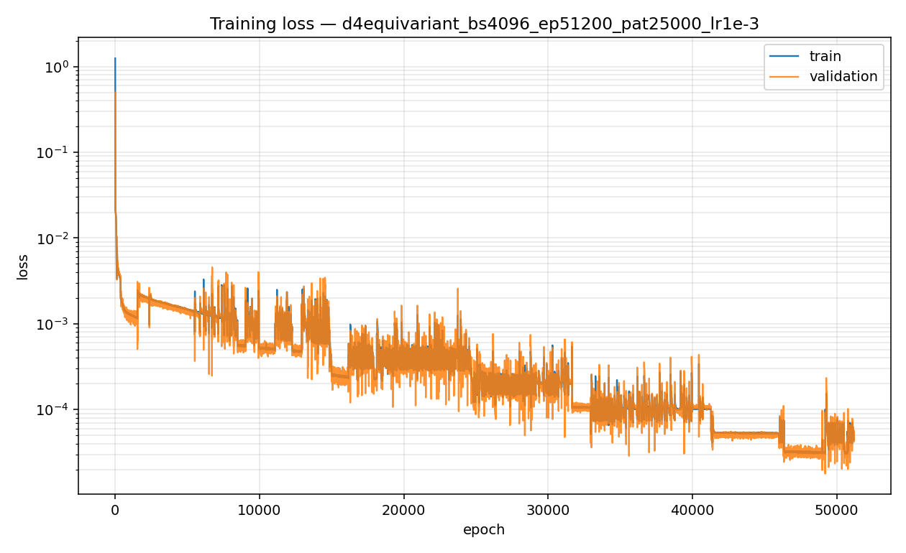
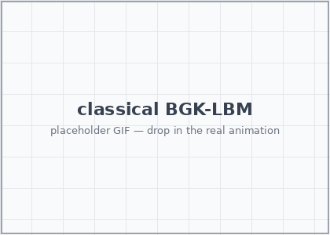
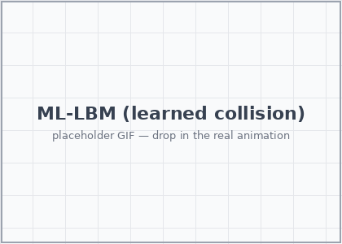
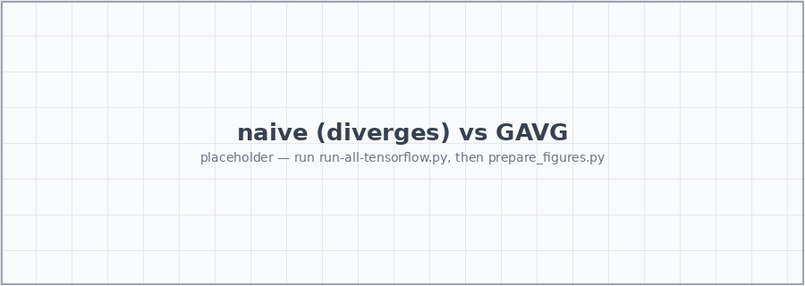
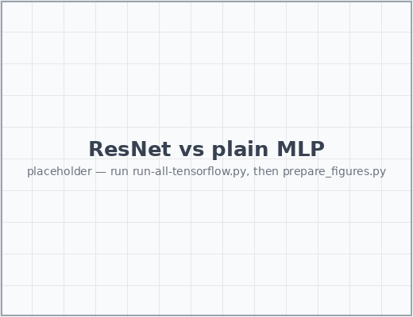
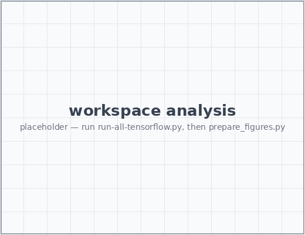

Learning the Lattice Boltzmann
Collision Operator
A Physics-Informed Machine Learning prototype
ML4PhA · Block 05 · Group 11
Based on Corbetta, Gabbana et al., Eur. Phys. J. E (2023) ·
arxiv:2212.06124
What is the LBM collision operator?
Lattice Boltzmann evolves populations \(f_i(x,t)\) — particles at
node \(x\) moving in direction \(i\). Each timestep is just two operators:
- Stream — populations hop to the neighbour along their velocity.
Exact, cheap, linear.
- Collide — populations relax toward local equilibrium
\(f_i^{\text{eq}}(\rho,\mathbf{u})\). This is the physics.
The collision \(\mathcal{C}:\mathbf{f}^{\text{pre}}\!\mapsto\mathbf{f}^{\text{post}}\) is
- local — it touches one node at a time,
- fixed-dimensional — \(\mathbb{R}^9 \to \mathbb{R}^9\) on D2Q9,
- the same map at every node, every step.
Why an operator → a surrogate model?
A single fixed \(\mathbb{R}^9\!\to\!\mathbb{R}^9\) function, applied
billions of times, is the ideal target for a neural surrogate:
- learn \(\mathcal{C}\) once, reuse it at every node and step;
- keep streaming as exact code — only the modelled relaxation is learned;
- swap the hand-derived BGK formula for a network that can later absorb
richer collision physics from data.
Classic BGK (the formula we replace):
\[ f_i^{\text{post}} = f_i^{\text{pre}} + \tfrac{1}{\tau}\!\left(f_i^{\text{eq}} - f_i^{\text{pre}}\right) \]
Theory — the linear and the nonlinear part
The full LBM step factorises cleanly, and we only learn the hard half.
Linear — keep it exact
- Streaming is a pure shift of data: \(f_i(x{+}\mathbf{c}_i) \leftarrow f_i(x)\).
- Conservation is linear algebra. With
\(\Delta f = \mathbf{f}^{\text{post}} - \mathbf{f}^{\text{pre}}\), mass + 2 momenta pin
down 3 of the 9 components exactly.
\[ \sum_i \Delta f_i = 0, \qquad \sum_i \Delta f_i\, \mathbf{c}_i = \mathbf{0} \]
These never need learning — solve them.
Nonlinear — let the network learn it
- The equilibrium \(f_i^{\text{eq}}\) is quadratic in \(\mathbf{u}\);
relaxation toward it is the genuinely nonlinear content of \(\mathcal{C}\).
- Only 6 unconstrained degrees of freedom of
\(\Delta f\) remain.
- A neural network predicts exactly those 6 — nothing more.
So the architecture is NN (nonlinear) ⊕ algebra (linear):
the net handles relaxation, exact algebra handles conservation.
D2Q9 stencil: 1 rest + 4 axis-aligned + 4 diagonal velocities.
Macroscopics: \(\rho = \sum_i f_i\), \(\;\rho\mathbf{u} = \sum_i f_i\,\mathbf{c}_i\).
Theory — the loss function
We regress the post-collision distribution and score it with a
Root-Mean-Square Relative Error:
\[ \mathcal{L} = \sqrt{\frac{1}{Q}\sum_i \left(\frac{y_i - \hat{y}_i}{y_i + \varepsilon}\right)^2} \]
- Relative, not absolute — so the rare, low-population directions
are weighted as strongly as the dominant rest population.
- A plain MSE would let the network ignore the tails; those tails are exactly
where instabilities are born.
- \(\varepsilon\) guards against division by zero on near-empty directions.
| Setting | Value |
|---|
| Optimiser | Adam |
| Batch size | 32 |
| Epochs | 200 (max), patience 50 |
| Precision | float64 |

Training / validation RMSRE. Placeholder — drop in
training_loss.png.
Theory — the nonlinear component we train
The MLP only ever sees the 6 free DoFs; symmetry and conservation wrap around it.
Inner MLP — deliberately small:
- input/output: the 6 unconstrained \(\Delta f_i\)
- 2 hidden layers × 50 units,
relu, no bias
- He-uniform init,
softmax output (a normalised distribution)
Conservation by construction (AlgReconstruction) —
the other 3 components are solved, not predicted:
df2 = -(df0 + 2*df3 + df4 + 2*df6 + 2*df7)
df5 = 0.5*(df0 + 3*df3 + 2*df4 + 2*df6 + 4*df7 - df1)
df8 = -0.5*(df0 + df1 + df3 + 2*df4 + 2*df7)
f_post = f_pre + df # exact mass + momentum
Symmetry by construction (GAVG) — the square lattice carries the
dihedral group D4 (8 rotations + reflections). We
group-average over it:
f_pre
↓
D4 lift — 8 oriented copies
↓
shared-weight MLP
↓
AlgReconstruction (conservation)
↓
D4 anti-symmetry — undo each transform
↓
average → GAVG
↓
f_post
Same weights see every orientation → ~8× effective data,
equivariance for free.
Results — Kármán vortex street
Flow past a cylinder: classical BGK-LBM vs
ML-LBM (learned collision).

Classical BGK-LBM

ML-LBM (learned collision)
The learned operator reproduces the periodic vortex shedding — same wake, same
shedding frequency — while conserving mass and momentum exactly.
Results — naive vs symmetry-constrained (GAVG)
The symmetry constraint is not a nicety — it is the difference between a
working surrogate and a diverging one.
Naive MLP (no D4, soft conservation)
- Fits the training triples fine in isolation…
- …but does not work at all in the LBM loop:
small per-step errors aren't symmetric, they bias the flow direction, and the
simulation breaks down within a few hundred steps.
- A black-box net + soft loss never learns the lattice symmetry exactly, and
"almost conserved" still drifts to garbage.
GAVG (D4 + algebraic conservation)
- Equivariance and conservation hold by construction, every step.
- Errors stay symmetric and bounded; the wake develops correctly.
- Same tiny MLP inside — the win is structure, not capacity.

Placeholder — naive (left) blows up; GAVG (right)
tracks the reference. Drop in naive_vs_gavg.png.
Results — ResNet experiment
Why a residual network here?
- Collision is a small correction:
\(\mathbf{f}^{\text{post}} = \mathbf{f}^{\text{pre}} + \Delta f\) is already
a residual connection — the network only models \(\Delta f\).
- Near equilibrium \(\Delta f \to 0\), so learning a perturbation around the
identity is far better conditioned than learning the full map.
- Going deeper with plain stacks hurts (vanishing gradients);
ResNet blocks add depth while keeping the identity
easy to represent.
Experiment: swap the 2-layer MLP for residual blocks of the same width and compare
convergence + long-time stability.

Placeholder — loss / stability vs plain MLP. Drop in
resnet_experiment.png.
- Residual blocks reach a lower RMSRE at equal width.
- Deeper plain stacks stall; residual ones keep improving.
- The residual framing matches a near-identity operator.
Future work
- LENNs — Lattice Equivariant Neural Networks.
Generalise the GAVG trick into reusable equivariant layers, so symmetry is a
building block rather than a hand-wired lift/average around one MLP.
- Learn more operators. Go beyond single-relaxation BGK:
MRT, multiphase / multicomponent, thermal and reactive collisions — and across a
range of \(\tau\) (varying viscosity) and resolutions.
- Push to 3D. Same group-equivariance pattern on D3Q27 —
a larger symmetry group, same recipe.
- Real-world simulations, where a fast, conservative
surrogate operator pays off:
- medical — blood-flow / hemodynamics in patient-specific vessels,
- astrophysics — supernova hydrodynamics and other extreme-regime flows,
- aerodynamics, porous media, and other large-scale CFD.
The thesis throughout: identify the symmetries and invariants, then constrain the
architecture so they can't be violated — rather than hoping a big network plus a
soft loss learns them from data.
Appendix — how this project was cooked
A look at the workspace that produced this deck and the underlying code.
| Metric | Count |
|---|
| Claude Code messages | NN |
| Tool calls (edits + runs) | NN |
| Files touched | NN |
| Training samples | 100 000 |
Lines in run-all-tensorflow.py | ~245 |
Placeholder figures — fill in the message/tool counts from the
workspace logs.

Placeholder — messages over time / effort breakdown.
The interesting part isn't the raw count — it's how much of the work was
deriving the constraints (D4, conservation) versus training: getting the
structure right made the network small and the training short.